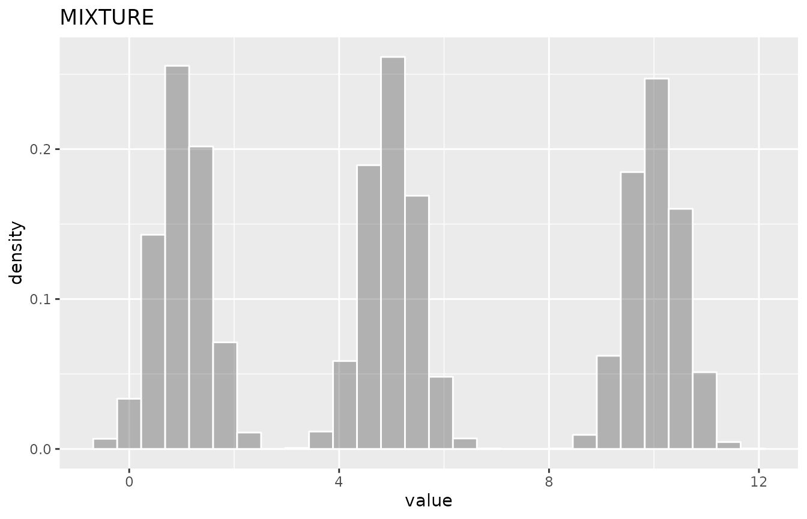

Using the convdistr package
John J. Aponte
2024-05-05
Source:vignettes/using-convdistr.Rmd
using-convdistr.RmdThe convdistr package provide tools to define
distribution objects and make mathematical operations with them. It keep
track of the results as if they where scalar numbers but maintaining the
ability to obtain randoms samples of the convoluted distributions.
To install this package from github
devtools::install_github("johnaponte/convdistr", build_manual = T, build_vignettes = T)
Practical example
What would be the resulting distribution of \(a+b*c\) if \(a\) is a normal distribution with mean 1 and standard deviation 0.5, \(b\) is a poisson distribution with lambda 5 and \(c\) is a beta distribution with shape parameters 10 and 20?
library(convdistr)
library(ggplot2)
a <- new_NORMAL(1,0.5)
b <- new_POISSON(5)
c <- new_BETA(10,20)
res <- a + b * c
metadata(res)
#> distribution rvar
#> 1 CONVOLUTION 2.666667
summary(res)| distribution | varname | oval | nsample | mean_ | sd_ | lci_ | median_ | uci_ |
|---|---|---|---|---|---|---|---|---|
| CONVOLUTION | rvar | 2.67 | 10000 | 2.66 | 1.01 | 0.96 | 2.56 | 4.92 |
ggDISTRIBUTION(res) + ggtitle("a + b * c")
The result is a distribution with expected value 2.67. A sample from 10000 drawns of the distribution shows a mean value of 2.66, a median of 2.56 and 95% quantiles of 0.96, 4.92
The following sections describe the DISTRIBUTION object, how to create new DISTRIBUTION objects and how to make operations and mixtures with them.
Please note that when convoluting distributions, this package assumes the distributions are independent between them, i.e. their correlation is 0. If not, you need to implement specific distributions to handle the correlation, like the MULTIVARIATE object.
Description of the DISTRIBUTION object
The DISTRIBUTION is kind of abstract class (or
interface) that specific constructors should implement.
It contains 4 fields:
distribution : A character with the name of the distribution implemented
seed : A numerical seed that is use to get a
repeatable sample in the summary function
oval : The observed value. It is the value expected. It is used as a number for the mathematical operations of the distributions as if they were a simple scalar
rfunc(n) : A function that generate random numbers
from the distribution. Its only parameter n is the number
of drawns of the distribution. It returns a matrix with as many rows as
n, and as many columns as the dimensions of the
distributions
The DISTRIBUTION object can support multidimensional distributions
for example a dirichlet distribution. The names of the dimensions should
coincides with the names of the oval vector. If it has only
one dimension, the default name is rvar.
It is expected that the rfunc could be included in the
creation of new distributions by convolution or mixture, so the
environment should be carefully controlled to avoid reference leaking
that is possible within the R language. For that reason, the
rfunc should be created within a
restrict_environment function that controls that only the
variables that are required within the function are saved
in the environment of the function.
Once the new objects are instanced, the fields are immutable and should not be changed.
Factory of DISTRIBUTION objects
The following functions create new objects of class
DISTRIBUTION
| Distribution | factory | parameters | function |
|---|---|---|---|
| uniform | new_UNIFORM | p_min, p_max | runif |
| normal | new_NORMAL | p_mean, p_sd | rnorm |
| beta | new_BETA | p_shape1, p_shape2 | rbeta |
| beta | new_BETA_lci | p_mean, p_lci, p_uci | rbeta |
| triangular | new_TRIANGULAR | p_min, p_max, p_mode | rtriangular |
| poisson | new_POISSON | p_lambda | rpoisson |
| exponential | new_EXPONENTIAL | p_rate | rexp |
| discrete | new_DISCRETE | p_supp, p_prob | sample |
| dirichlet | new_DIRICHLET | p_alpha, p_dimnames | rdirichlet |
| truncated | new_TRUNCATED | p_distribution, p_min, p_max | |
| dirac | new_DIRAC | p_value | |
| NA | new_NA | p_dimnames |
Methods
The following are methods for all objects of class
DISTRIBUTION
-
metadata(x)Print the metadata for the distribution -
summary(object, n=10000)Produce a summary of the distribution -
rfunc(x, n)Generatenrandom drawns of the distribution -
plot(x, n= 10000)Produce a density plot of the distribution -
ggDISTRIBUTION(x, n= 10000)produce a density plot of the distribution using ggplot2
myDistr <- new_NORMAL(0,1)
metadata(myDistr)
#> distribution rvar
#> 1 NORMAL 0
rfunc(myDistr, 10)
#> rvar
#> 1 -1.82340259
#> 2 -1.14762276
#> 3 -0.54868400
#> 4 1.17432834
#> 5 0.50286449
#> 6 -0.86745105
#> 7 0.01276699
#> 8 -0.51183777
#> 9 -1.20438751
#> 10 1.02704410
summary(myDistr)| distribution | varname | oval | nsample | mean_ | sd_ | lci_ | median_ | uci_ |
|---|---|---|---|---|---|---|---|---|
| NORMAL | rvar | 0 | 10000 | -0.01 | 1 | -1.94 | -0.01 | 1.96 |
plot(myDistr)Figure with R plot
ggDISTRIBUTION(myDistr)Figure with ggplot2
Convolution for Distribution with the same dimensions
Mathematical operations like +, -,
*, / between DISTRIBUTION with
the same dimensions can be perform with the
new_CONVOLUTION(listdistr, op, omit_NA = FALSE) function.
The listdistr parameter is a list of
DISTRIBUTION objects on which the operation is made. A
shorter version exists for each one of the operations as follow
new_SUM(listdistr, omit_NA = FALSE)new_SUBTRACTION(listdistr, omit_NA = FALSE)new_MULTIPLICATION(listdistr, omit_NA = FALSE)new_DIVISION(listdistr, omit_NA = FALSE)
but Mathematical operator can also be used.
d1 <- new_NORMAL(1,1)
d2 <- new_UNIFORM(2,8)
d3 <- new_POISSON(5)
dsum <- new_SUM(list(d1,d2,d3))
dsum
#> distribution rvar
#> 1 CONVOLUTION 11
d1 + d2 + d3
#> distribution rvar
#> 1 CONVOLUTION 11
summary(dsum)| distribution | varname | oval | nsample | mean_ | sd_ | lci_ | median_ | uci_ |
|---|---|---|---|---|---|---|---|---|
| CONVOLUTION | rvar | 11 | 10000 | 10.97 | 2.99 | 5.42 | 10.86 | 17.03 |
ggDISTRIBUTION(dsum)
Mixture
A DISTRIBUTION, consisting on the mixture of several
distribution can be obtained with the
new_MIXTURE(listdistr, mixture) function where
listdistr is a list of DISTRIBUTION objects
and mixture the vector of probabilities for each
distribution. If missing the mixture, the probability will be the same
for each distribution.
d1 <- new_NORMAL(1,0.5)
d2 <- new_NORMAL(5,0.5)
d3 <- new_NORMAL(10,0.5)
dmix <- new_MIXTURE(list(d1,d2,d3))
summary(dmix)| distribution | varname | oval | nsample | mean_ | sd_ | lci_ | median_ | uci_ |
|---|---|---|---|---|---|---|---|---|
| MIXTURE | rvar | 5.33 | 10000 | 5.31 | 3.71 | 0.29 | 4.97 | 10.73 |
ggDISTRIBUTION(dmix)
Convolution of distributions with different dimensions
When convoluting distribution with different dimensions, there are
two possibilities. The new_CONVOLUTION_assoc family of
functions perform the operation only on the common dimensions and left
the others dimensions as they are, or the
new_CONVOLUTION_comb family of functions which perform the
operation in the combination of all dimensions.
d1 <- new_MULTINORMAL(c(0,1), matrix(c(1,0.3,0.3,1), ncol = 2), p_dimnames = c("A","B"))
d2 <- new_MULTINORMAL(c(3,4), matrix(c(1,0.3,0.3,1), ncol = 2), p_dimnames = c("B","C"))
summary(d1)| distribution | varname | oval | nsample | mean_ | sd_ | lci_ | median_ | uci_ |
|---|---|---|---|---|---|---|---|---|
| MULTINORMAL | A | 0 | 10000 | -0.01 | 0.99 | -1.96 | -0.02 | 1.94 |
| MULTINORMAL | B | 1 | 10000 | 1.02 | 1.01 | -0.95 | 1.02 | 3.01 |
summary(d2)| distribution | varname | oval | nsample | mean_ | sd_ | lci_ | median_ | uci_ |
|---|---|---|---|---|---|---|---|---|
| MULTINORMAL | B | 3 | 10000 | 3.00 | 1.01 | 1.05 | 3.00 | 4.98 |
| MULTINORMAL | C | 4 | 10000 | 4.01 | 1.00 | 2.07 | 4.01 | 5.98 |
summary(new_SUM_assoc(d1,d2))| distribution | varname | oval | nsample | mean_ | sd_ | lci_ | median_ | uci_ |
|---|---|---|---|---|---|---|---|---|
| CONVOLUTION | A | 0 | 10000 | 0.00 | 1.00 | -1.96 | 0.01 | 1.95 |
| CONVOLUTION | C | 4 | 10000 | 3.99 | 0.99 | 2.04 | 3.98 | 5.95 |
| CONVOLUTION | B | 4 | 10000 | 4.01 | 1.42 | 1.17 | 4.00 | 6.85 |
summary(new_SUM_comb(d1,d2))| distribution | varname | oval | nsample | mean_ | sd_ | lci_ | median_ | uci_ |
|---|---|---|---|---|---|---|---|---|
| CONVOLUTION | A_B | 3 | 10000 | 3.00 | 1.40 | 0.29 | 2.99 | 5.76 |
| CONVOLUTION | B_B | 4 | 10000 | 3.99 | 1.41 | 1.21 | 3.99 | 6.74 |
| CONVOLUTION | A_C | 4 | 10000 | 4.00 | 1.40 | 1.24 | 4.00 | 6.73 |
| CONVOLUTION | B_C | 5 | 10000 | 4.99 | 1.42 | 2.16 | 5.02 | 7.72 |